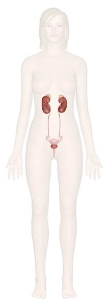

Kidneys
The kidneys are a pair of bean-shaped organs found along the posterior wall of the abdominal cavity. The left kidney is located slightly higher than the right kidney because the right side of the liver is much larger than the left side. The kidneys, unlike the other organs of the abdominal cavity, are located posterior to the peritoneum and touch the muscles of the back. The kidneys are surrounded by a layer of adipose that holds them in place and protects them from physical damage. The kidneys filter metabolic wastes, excess ions, and chemicals from the blood to form urine.
Ureters
The ureters are a pair of tubes that carry urine from the kidneys to the urinary bladder. The ureters are about 10 to 12 inches long and run on the left and right sides of the body parallel to the vertebral column. Gravity and peristalsis of smooth muscle tissue in the walls of the ureters move urine toward the urinary bladder. The ends of the ureters extend slightly into the urinary bladder and are sealed at the point of entry to the bladder by the ureterovesical valves. These valves prevent urine from flowing back towards the kidneys.
Urinary Bladder
The urinary bladder is a sac-like hollow organ used for the storage of urine. The urinary bladder is located along the body’s midline at the inferior end of the pelvis. Urine entering the urinary bladder from the ureters slowly fills the hollow space of the bladder and stretches its elastic walls. The walls of the bladder allow it to stretch to hold anywhere from 600 to 800 milliliters of urine.
Urethra
The urethra is the tube through which urine passes from the bladder to the exterior of the body. The female urethra is around 2 inches long and ends inferior to the clitoris and superior to the vaginal opening. In males, the urethra is around 8 to 10 inches long and ends at the tip of the penis. The urethra is also an organ of the male reproductive system as it carries sperm out of the body through the penis.
The flow of urine through the urethraUrinary system cross-secrion is controlled by the internal and external urethral sphincter muscles. The internal urethral sphincter is made of smooth muscle and opens involuntarily when the bladder reaches a certain set level of distention. The opening of the internal sphincter results in the sensation of needing to urinate. The external urethral sphincter is made of skeletal muscle and may be opened to allow urine to pass through the urethra or may be held closed to delay urination.